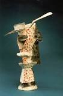
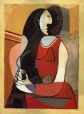
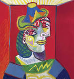
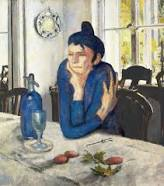
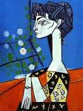

Pablo Ruiz Picasso ), conocido como Pablo Picasso, fue un pintor y escultor español, creador, junto con Georges Braque y Juan Gris, del movimiento cubista.
Considerado uno de los mayores artistas del siglo XX, participó desde la génesis de muchos movimientos artísticos que se propagaron por el mundo y ejercieron una gran influencia en otros grandes artistas de su tiempo. Incansable y prolífico, pintó más de dos mil obras actualmente presentes en museos y colecciones de toda Europa y del mundo. Además, abordó otros géneros como el dibujo, el grabado, la ilustración de libros, la escultura, la cerámica y el diseño de escenografía y vestuario para montajes teatrales. En lo político, Picasso se declaraba pacifista y comunista. Fue miembro del Partido Comunista Francés hasta su muerte,2 el 8 de abril de 1973 en Notre-Dame-de-Vie (Mougins, Francia) a los 91 años. Está enterrado en el parque del castillo de Vauvenargues (Bouches-du-Rhone).
El vaso de absenta |
Seated woman |
Buste de Femme |
La bebedora de absenta |
Jacqueline con flores |